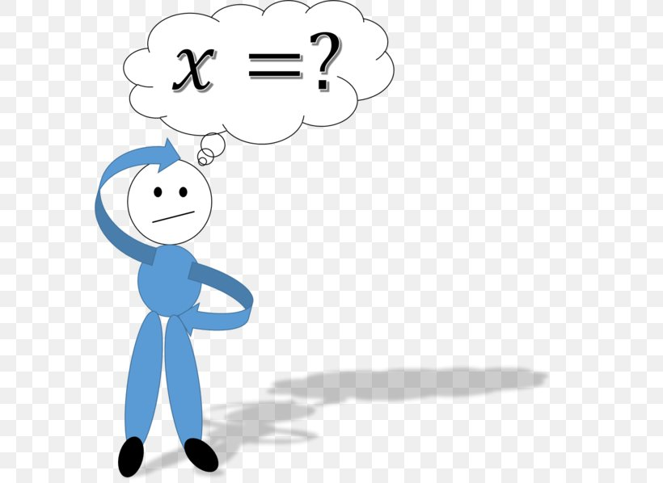

Before we get started, here are some helpful tips:
Here are some common mistakes to avoid:
Take a moment to solve the following as review before we go into handling variables on both sides:
Solve for x: 2x + 3 = x + 7
Step 1: Move x to the left side by subtracting x from both sides: 2x - x + 3 = 7
Step 2: Combine like terms: x + 3 = 7
Step 3: Move 3 to the right side by subtracting 3 from both sides: x = 7 - 3
Answer: x = 4
Check the answer by substituting x = 4 back into the original equation: 2(4) + 3 = 4 + 7
Simplify both sides: 8 + 3 = 4 + 7
Simplify further: 11 = 11
Solve for x: 3x + 5 = 2x + 9
Step 1: Move 2x to the left side by subtracting 2x from both sides: 3x - 2x + 5 = 9
Step 2: Combine like terms: x + 5 = 9
Step 3: Move 5 to the right side by subtracting 5 from both sides: x = 9 - 5
Answer: x = 4
Check the answer by substituting x = 4 back into the original equation: 3(4) + 5 = 2(4) + 9
Simplify both sides: 12 + 5 = 8 + 9
Simplify further: 17 = 17
Solve for x: 4x + 2 = 3x + 8
Step 1: Move 3x to the left side by subtracting 3x from both sides: 4x - 3x + 2 = 8
Step 2: Combine like terms: x + 2 = 8
Step 3: Move 2 to the right side by subtracting 2 from both sides: x = 8 - 2
Answer: x = 6
Check the answer by substituting x = 6 back into the original equation: 4(6) + 2 = 3(6) + 8
Simplify both sides: 24 + 2 = 18 + 8
Simplify further: 26 = 26
Solve for x: 2x + 5 = x + 2
Step 1: Move x to the left side by subtracting x from both sides: 2x - x + 5 = 2
Step 2: Combine like terms: x + 5 = 2
Step 3: Move 5 to the right side by subtracting 5 from both sides: x = 2 - 5
Answer: x = -3
Check the answer by substituting x = -3 back into the original equation: 2(-3) + 5 = -3 + 2
Simplify both sides: -6 + 5 = -3 + 2
Simplify further: -1 = -1
Solve for x: 4x + 6 = 2x + 14
Step 1: Move 2x to the left side by subtracting 2x from both sides: 4x - 2x + 6 = 14
Step 2: Combine like terms: 2x + 6 = 14
Step 3: Move 6 to the right side by subtracting 6 from both sides: 2x = 14 - 6
Step 4: Simplify: 2x = 8
Answer: x = 4
Check the answer by substituting x = 4 back into the original equation: 4(4) + 6 = 2(4) + 14
Simplify both sides: 16 + 6 = 8 + 14
Simplify further: 22 = 22
Here are some examples of solving equations with variables on both sides. Try to solve them on your own first! Then check your answers.